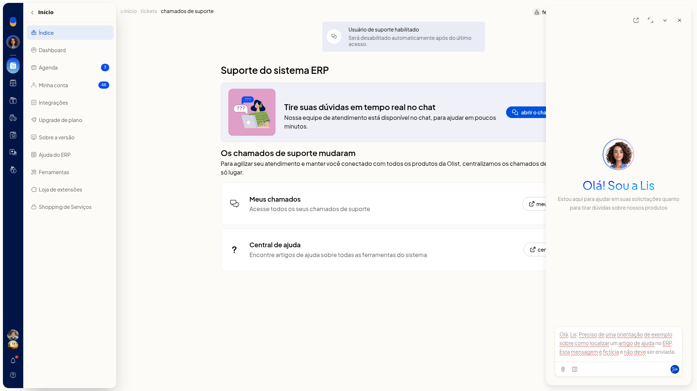
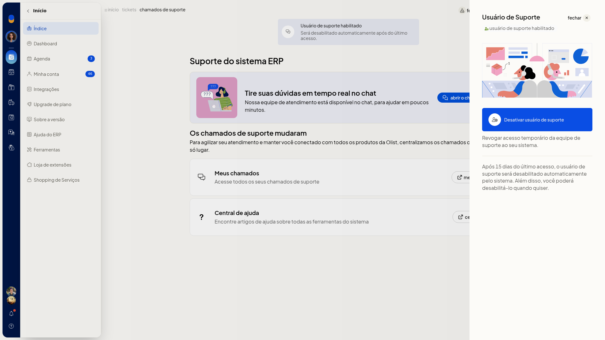

Suporte: abrir chamado e habilitar usuário de suporte
O atendimento de suporte do ERP da Olist começa no chat em tempo real com o Assistente da Olist (Lis). Na tela Suporte do sistema ERP, você descreve a dúvida para o time, consulta o que já foi aberto e libera um acesso temporário da equipe à conta.
Esse acesso pode ser desativado por você e é desabilitado automaticamente 15 dias após o último acesso.
Importante
- O atendimento começa no chat. Não há formulário de novo chamado com assunto ou categoria.
- A lista Meus chamados não cria chamado. Ela serve para consulta.
- O horário de atendimento informado na tela é de segunda a sexta, das 8h30 às 17h30.
- Para abrir o chamado, a mensagem precisa ter pelo menos 10 palavras.
- O usuário de suporte é desabilitado automaticamente após 15 dias do último acesso. Você também pode desativá-lo quando quiser.
- Com o acesso já habilitado, a ação visível é Desativar usuário de suporte.
Instruções
Pelo card Fale conosco
-
Acesse Início > Índice.
-
No card Fale conosco, leia Tem alguma dúvida? Abra um chamado para o nosso time de suporte. e abra o card.

-
Na tela Suporte do sistema ERP, leia o aviso Os chamados de suporte mudaram e o card Tire suas dúvidas em tempo real no chat.
-
Clique em abrir o chat de suporte.

-
Escreva a dúvida, com pelo menos 10 palavras, no campo Pergunte-me qualquer coisa. Estou aqui para automatizar suas tarefas, esclarecer dúvidas e ajudar nos seus chamados. Se quiser, escolha um modelo em Modelos ou anexe uma imagem (JPEG, PNG, GIF ou WEBP), PDF ou CSV, e envie a mensagem. O painel da Lis fica pronto para o atendimento.
Pelo botão Ajuda
-
Clique em Ajuda no cabeçalho.
-
No painel Central de Suporte, clique em Suporte.

-
Na tela Suporte do sistema ERP, clique em abrir o chat de suporte.
-
Escreva a dúvida, com pelo menos 10 palavras, envie a mensagem e, se quiser, use Modelos ou anexe uma imagem (JPEG, PNG, GIF ou WEBP), PDF ou CSV. O painel da Lis fica pronto para o atendimento.
Habilitar o usuário de suporte
- Na tela Suporte do sistema ERP, clique em usuário de suporte.
- Quando o acesso ainda não está ativo, leia Ativando o usuário de suporte, nossa equipe passa a ter acesso temporário à sua conta para auxiliar na solução de eventuais problemas.
- Clique em Habilitar usuário de suporte para conceder o acesso temporário.
Desativar o acesso já habilitado
-
Na tela Suporte do sistema ERP, clique em usuário de suporte no cabeçalho.
-
Leia o status usuário de suporte habilitado, a frase Revogar acesso temporário da equipe de suporte ao seu sistema e o aviso de desabilitação automática após 15 dias do último acesso.

-
Para encerrar o acesso antes disso, clique em Desativar usuário de suporte. Para sair sem alterar, clique em fechar. O painel mostra o acesso temporário habilitado e a ação para revogá-lo.
Resultado
A tela Suporte do sistema ERP exibe o card de chat, Meus chamados, a Central de ajuda e o banner Usuário de suporte habilitado. O painel da Lis mostra o campo de pergunta, Modelos e o anexo de arquivo.
Informações adicionais
- O banner da tela informa Usuário de suporte habilitado e que o acesso será desabilitado automaticamente após o último acesso, sem o número de dias. O prazo de 15 dias aparece no painel lateral.
- Em Meus chamados, a consulta usa as abas Todos, novos, em análise, aguardando sua resposta, resolvidos e finalizados, além da busca e de Filtrar. Em Filtrar, os produtos exibidos são Loja, Envios e Sistema ERP. Use cancelar para sair sem aplicar ou filtrar para aplicar.